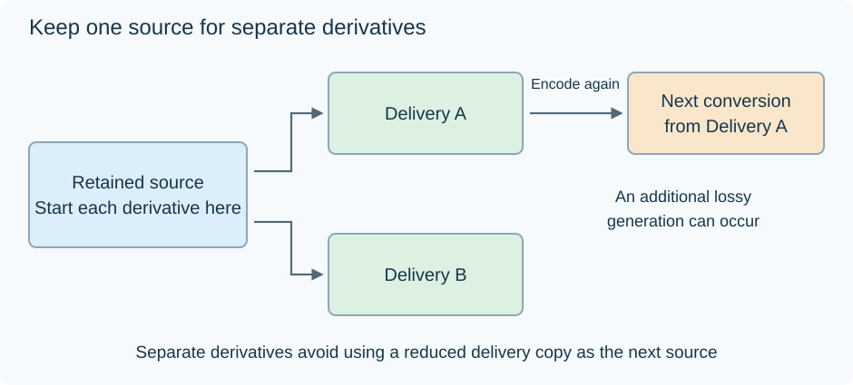

Video Generation Loss
If two viewing copies are made separately from the same retained source, each begins with that source's picture information. If a third copy is made from one of the viewing copies, it begins with an already altered reconstruction.
That difference is the useful way to understand generation loss.

The diagram shows conversion lineage, not measured visible damage.
Separate new encodes from a chain
Let M be a retained master. Make A for one playback target and B for another:
M →A and M →B.
B does not inherit A's encoding errors because A was not its input. Ordinary Emby playback conversions that each read the retained library source have this branching relationship. Repeated viewing does not itself turn the previous delivery stream into the next source.
A chain instead looks like M →A →C. A user might create it by converting a small copy and later using that copy for another export.
Each stage's encoder receives the samples reconstructed at the preceding stage.
Follow the errors at one aligned position
For pictures in the same sample representation, let A's error relative to M be A −M, and C's new error relative to A be C −A.
Then:
C −M =(A −M) +(C −A).
Take a scalar example: M is 17, A is 16, and C is 18. The first stage changes the value by −1, the second by +2, and the final error relative to M is +1.
This does not mean every encode adds the same visible damage, or that each sample's absolute error must increase. Errors can reinforce or partly cancel at a position. The equation identifies the inputs whose differences are being combined.
Original scalar illustration; it is not a prediction of a named codec's multigeneration quality.
Why lost distinctions cannot be recovered from size
Suppose a first quantizer rounds both 17 and 19 to 16. The stored result no longer identifies which of those two inputs occurred.
A later process might produce 18, but it cannot know which original input to recover from the shared 16. More output bits can describe that input reconstruction more accurately; they do not supply the discarded distinction.
In a picture, such distinctions can correspond to texture, grain or subtle gradients. A delivery copy can therefore be an adequate viewing source while being a reduced input for later production.
Locate the operation that creates a generation
| Operation | Video sample/coding effect |
|---|---|
| Copy the file | Existing coded video is retained |
| Repackage the same video packets | Existing picture coding is retained |
| Convert audio while copying video | No new video encode |
| Decode and encode video with lossy settings | A new video reconstruction is created |
| Losslessly encode the decoded samples | That stage retains its input exactly |
Display metadata or timestamps can also change presentation without a new video encode. Cropping/resizing/filtering followed by encoding changes the input array as well as its later coding. Identify those operations before interpreting a difference between copies.
A useful source strategy follows from the lineage: keep the best retained input and make needed derivatives from it. When editing requires an intermediate, a suitable lossless or production representation can serve the next stage, while its guarantee remains tied to the samples it actually received.